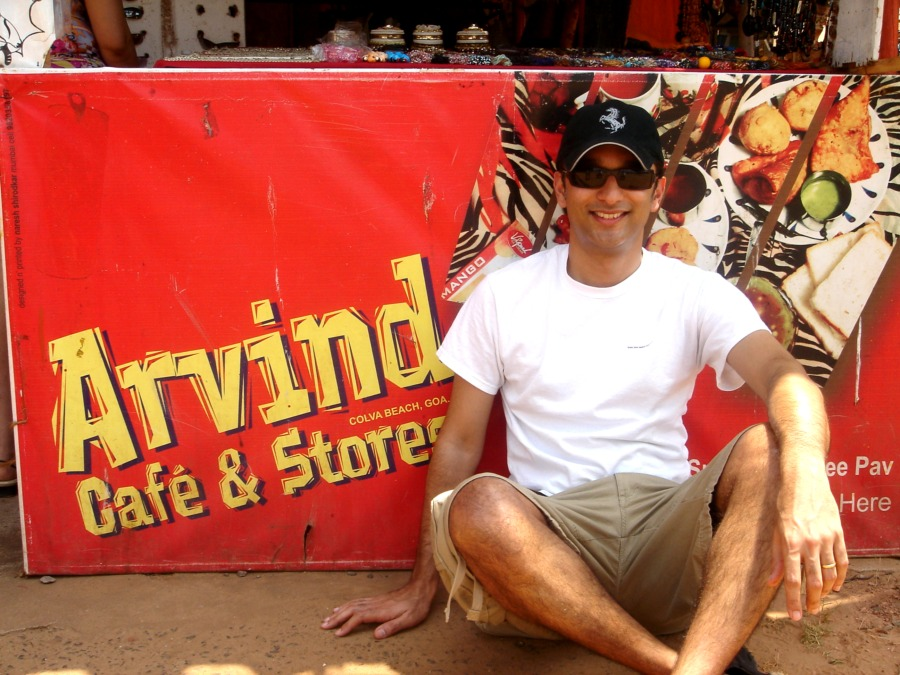

Assistant Professor of Radiology and Oncology.
Postdoctoral Fellow, Cancer Imaging, The Johns Hopkins University School of Medicine.
PhD, Functional Imaging, Medical College of Wisconsin and Marquette University.
BS, Electronics Engineering, University of Poona, India.
Dr. Pathak’s ‘official’ Radiology page can be found here. http://www.hopkinsradiology.org/Radiology Faculty/Research Faculty Bios/Pathak
Research Statement
For years, researchers have focused on the role of the cancer cell itself, in disease progression.
However, the ‘conversation’ between the tumor cell and its immediate environment,
i.e. the surrounding normal cells and associated molecules also plays an important role in tumor development.
The Pathak Lab characterizes the changes that occur in this ‘tumor microenvironment’ using novel biomedical
imaging techniques.
To advance our understanding of cancer, our research focuses on the following key areas: (i) image contrast mechanisms; (ii) multiscale imaging; (iii) data visualization; (iv) clinical biomarkers and (v) biophysical modeling.
To advance our understanding of cancer, our research focuses on the following key areas: (i) image contrast mechanisms; (ii) multiscale imaging; (iii) data visualization; (iv) clinical biomarkers and (v) biophysical modeling.
My approach to mentoring and science is nicely captured by the following quotes:
“When teaching, light a fire, don't fill a bucket.” – Dan Snow
“Discovery consists in seeing what everyone else has seen and thinking what no one else has thought.” - Albert Szent-Gyorgyi
“In the beginner's mind there are many possibilities. In the expert's mind there are few.” - Shunryu Suzuki